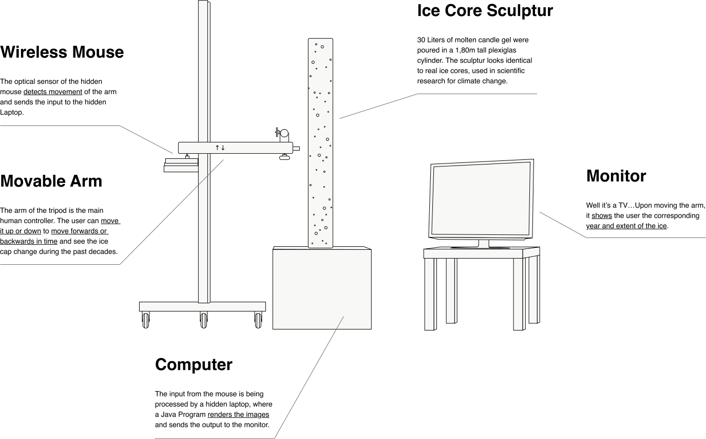
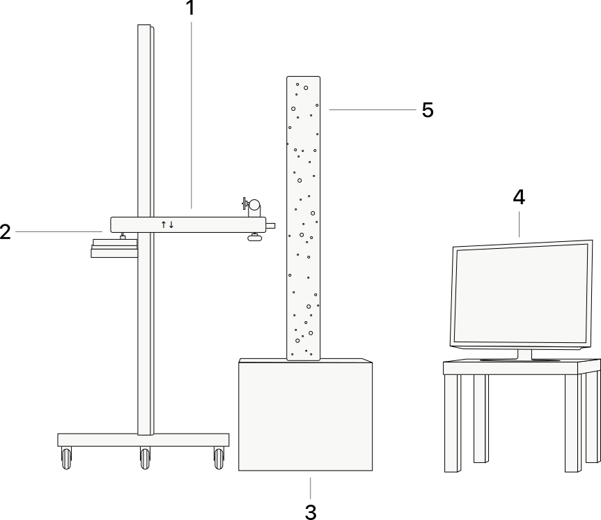

Overview
This is (not) a drill is an interactive installation, designed to give amateurs an interface for checking the reality of climate change. They can shine light through a 1.8 meter tall sculpture of an ice core. A wireless mouse detects the vertical movement of the arm and sends the input to a hidden laptop, connected to the monitor. Moving the arm and the lamp closer to the top of the ice core will show the data from recent years, while moving the arm down will take you back in time.
The real ice cores are drilled out of arctic ice or glaciers to inspect gases or other materials trapped in it, which tell stories about the climate from decades ago. The ice core is the main visual metaphor and shapes an emotional and logical connection between the user and the data. In times of political polarization and a tendency to extremism, sharing neutral data without manipulating the message was a main focus in this project. Aiming for a sceptical target group, that prefers facebook over scientific portals as a source of information, may be much more challenging, but is ultimately more useful than explaining a convinced group something they already know.
This is (not) a drill is trying to be an answer to the question how design and art could be used to transfer scientific information in a time of disinformation and emotional thinking.
Installation
 1 Wireless Mouse
The optical sensor of the hidden mouse detects movement of the arm and sends the input to the hidden Laptop.
2 Movable Arm
The arm of the tripod is the main human controller. The user can move it up or down to move forwards or backwards in time and see the ice cap change during the past decades.
3 Computer
The input from the mouse is being processed by a hidden laptop, where a Java Program renders the images and sends the output to the monitor.
4 Monitor
Well it’s a TV…Upon moving the arm, it shows the user the corresponding year and extent of the ice.
5 Ice Core Sculpture
30 Liters of molten candle gel were poured in a 1,80m tall plexiglas cylinder. The sculpture looks identical to real ice cores, used in scientific research for climate change.
Method
Source
Satellite Data from NASA and NSIDC, provided by the University of Colorado, are crawled and sorted. Thousands of maps from 1979 to 2019 show the extent and density of the north polar ice cap.
Mapping
The data is projected on to a globe as accurately as possible. Reducing the opacity allows a precise tracking of the borders.
Illustration
The map is being digitally retouched to give it a photorealistic look. Besides the extent, the ice cap’s density is visible as well, thanks to varying opacity levels. The accuracy of the borders in the final image is <Δ300km when compared to the original data.
{kind=link}